Footnotes in ConTeXt · Overview · Tutorial · How-to guides · Including verbatim material in footnotes · Reference · Explanation · Glossary
🚧 Under construction — This guide is currently being revised. Please do not modify its source code while this banner remains in place.
Special content and advanced cases · Previous: Typesetting notes in bidirectional documents · How-to guides overview · Next: Footnote reference
Contents
- 1 1. Goal
- 2 2. Understand why verbatim material is special
- 3 3. Use inline typing for short material
- 4 4. Print isolated special characters
- 5 5. Avoid block verbatim inside a note argument
- 6 6. Store multiline code in a buffer
- 7 7. Separate the mark from a complex note entry
- 8 8. Use external files only when appropriate
- 9 9. Keep large examples in the main text
- 10 10. Use a custom series for technical notes
- 11 11. Choose the appropriate method
-
12
12. Common mistakes
- 12.1 12.1. Putting \starttyping directly inside \footnote{...}
- 12.2 12.2. Assuming that \type and \starttyping solve the same problem
- 12.3 12.3. Using inline typing for a very long line
- 12.4 12.4. Choosing a delimiter that occurs in the typed material
- 12.5 12.5. Using an external file that the compiler cannot access
- 12.6 12.6. Treating a code-heavy note as ordinary prose
- 12.7 12.7. Using verbatim when only one special character is needed
- 12.8 12.8. Letting code dominate the footnote area
- 13 13. Complete example
- 14 14. What this guide has established
- 15 15. Next steps
1. Goal
Include commands, file names, short code fragments, and longer source examples in footnotes.
This guide distinguishes:
- short inline material that only needs monospaced formatting;
- isolated TeX special characters;
- material that must be read with verbatim-style character handling;
- multiline code that should be stored in a buffer;
- large examples that should remain in the main text.
Result
Code-like material can be included in notes without confusing argument parsing or making the source unnecessarily fragile.
2. Understand why verbatim material is special
The ordinary form:
\footnote{note text}
reads the note text as a normal TeX argument.
Within that argument, characters such as the following may have special meanings:
\
{
}
%
#
_
&
A footnote argument is normally tokenized before it is typeset. Commands that require verbatim-style character reading therefore cannot always be introduced safely after TeX has already begun reading that argument.
The central difficulty
Ordinary note text and true verbatim material may require different parsing regimes.
Prepare multiline or structurally complex code before the footnote argument is read.
The appropriate method therefore depends on the material:
| Material | Recommended method |
|---|---|
| File name or short identifier | Use inline typing with \type.
|
| Short command or configuration | Use \type, preferably with a convenient delimiter.
|
| One or two special characters | Use dedicated character commands. |
| Multiline or true verbatim material | Store it in a buffer before creating the footnote. |
| Large or central example | Keep it in the main text. |
3. Use inline typing for short material
Use \type for short material that can remain inline.
3.1. File names and identifiers
File names, identifiers, and simple option values can usually be placed directly in a note.
-
\setuppapersize[A6] \setupbodyfont [libertinus,10pt] \starttext The configuration file is named \type{environment.mkxl}.\footnote {The file name \type{environment.mkxl} is shown in monospaced type.} \stoptext
-
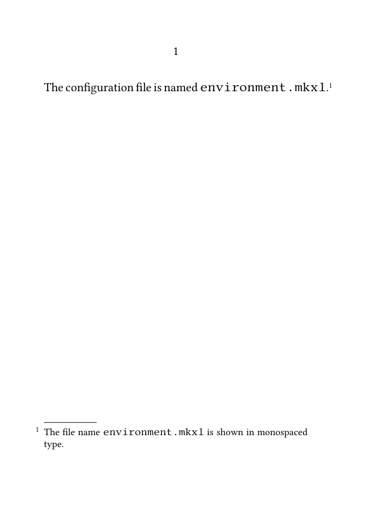
This method is suitable for:
- file names;
- short identifiers;
- option values;
- simple command names.
3.2. Short commands and configurations
A short ConTeXt command can also be shown with \type.
-
\setuppapersize[A6] \setupbodyfont [libertinus,10pt] \starttext The command used here is described in a note.\footnote {Use \type{\setupnote} to configure the note series.} \stoptext
-
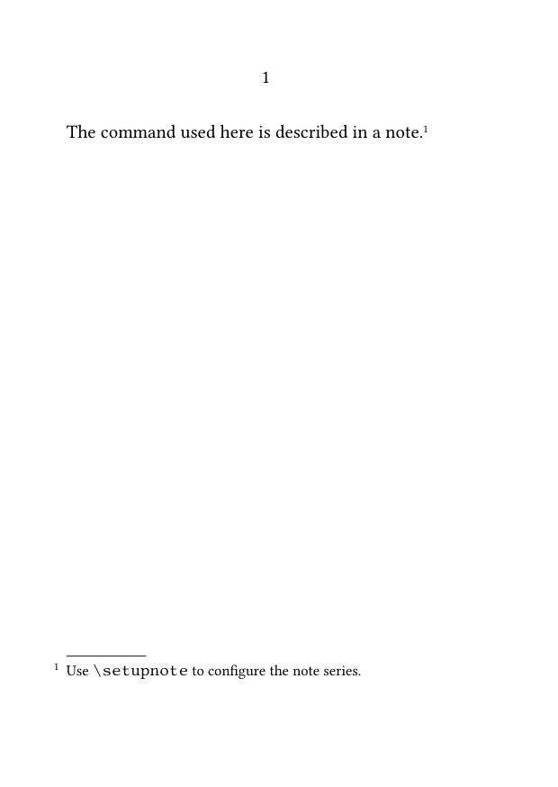
A short command with arguments can be presented in the same way:
-
\setuppapersize[A6] \setupbodyfont [libertinus,10pt] \starttext The note gives a brief configuration example.\footnote {For example: \type{\setupnote[footnote][bodyfont=small]}.} \stoptext
-
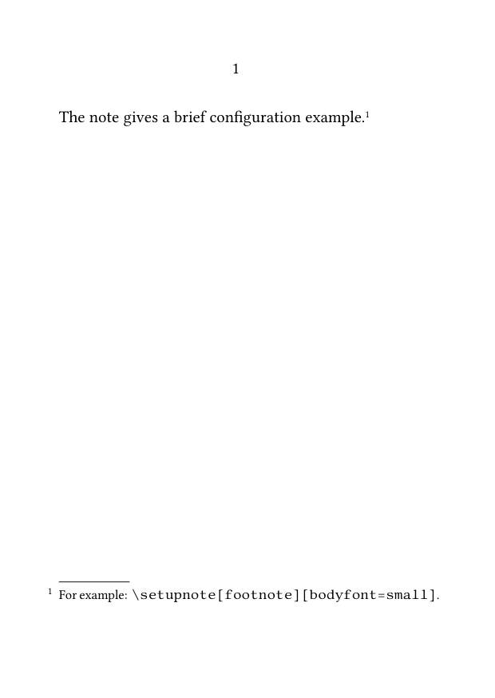
Keep inline code short
A long command line may produce poor line breaks or overrun the narrow measure of a footnote.
3.3. Choose a safe delimiter
When braces make the source difficult to read, use a delimited form of \type:
\type|\setupnote[footnote][bodyfont=small]|
-
\setuppapersize[A6] \setupbodyfont [libertinus,10pt] \starttext This sentence has a note containing a command.\footnote {The relevant setup is \type|\setupnote[footnote][bodyfont=small]|.} \stoptext
-
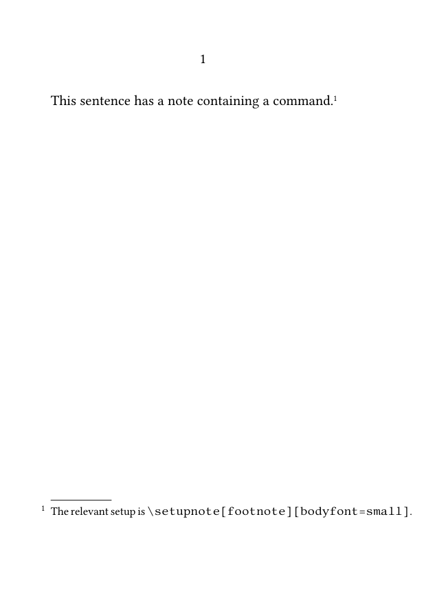
The delimiter does not have to be |. Choose a character that does not occur in the material being typed.
3.4. Control spaces around inline code
Source line breaks may affect spaces around typed material.
Compare:
Use \type{\setupnote} here.
with:
Use
\type{\setupnote}
here.
Inspect the compiled result rather than relying only on source indentation.
Use \space explicitly only when a specific missing space has been identified.
4. Print isolated special characters
If a note contains only one or two TeX special characters, use dedicated character commands instead of full verbatim handling.
Useful commands include:
\letterpercent \letterhash \letterunderscore \letterbackslash
4.1. MWE: isolated TeX characters
-
\setuppapersize[A6] \setupbodyfont [libertinus,10pt] \starttext The note mentions several special characters.\footnote {A comment begins with \letterpercent, an identifier may contain \letterunderscore, a parameter marker is written with \letterhash, and a command begins with \letterbackslash.} \stoptext
-
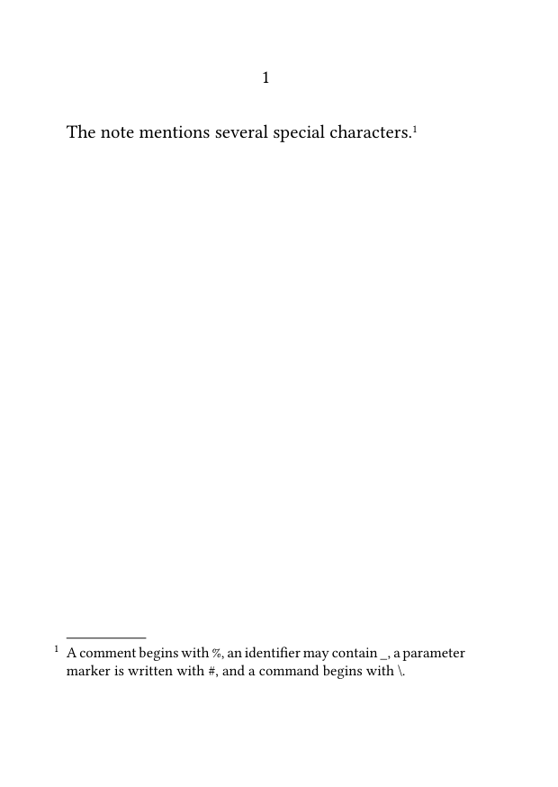
Prefer normal prose when possible
Do not introduce a verbatim block merely to print one percent sign, hash, underscore, or backslash.
Compile the example with the current ConTeXt version before reusing these commands in a larger project.
5. Avoid block verbatim inside a note argument
Do not place a typing environment directly inside an ordinary footnote argument:
\footnote{
\starttyping
\setupnote[footnote][bodyfont=small]
\stoptyping
}
The footnote argument is already being read when the typing environment begins.
Depending on the construction, this may:
- fail to compile;
- stop at the wrong brace;
- interpret special characters incorrectly;
- produce unpredictable spacing.
Do not put block verbatim directly in an ordinary argument
Store the material in a buffer before creating the note, register the note text separately, or move the code block into the main text.
Inline \type and block typing solve different problems:
| Method | Appropriate use |
|---|---|
\type
|
Short inline commands, identifiers, and configurations. |
\starttyping ... \stoptyping
|
Multiline blocks prepared outside the ordinary footnote argument. |
6. Store multiline code in a buffer
A buffer stores the code before the footnote argument is read.
The buffered material can then be typeset inside the note with \typebuffer.
6.1. MWE: multiline code stored in a buffer
-
\setuppapersize[A6] \setupbodyfont [libertinus,10pt] \startbuffer[footnote-code] \setupnote [footnote] [bodyfont=small] \stopbuffer \starttext This sentence refers to a longer setup example.\footnote {The complete setup is: \blank[small] \typebuffer[footnote-code]} \stoptext
-
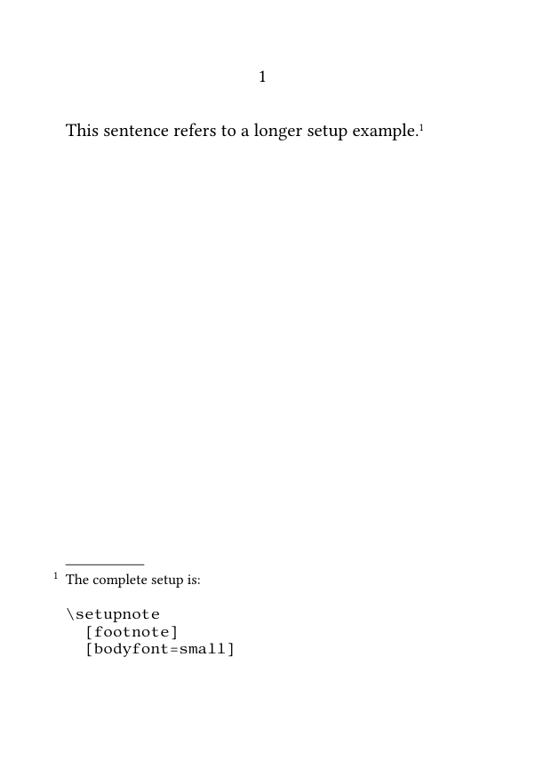
The buffer is defined before the note is created, so the code is no longer introduced as raw block verbatim inside the footnote argument.
Recommended method for multiline code
Use a buffer for self-contained source examples that require several lines or contain characters that would make an ordinary note argument fragile.
6.2. Configure buffered code for the note width
The code still has to fit the narrow note measure.
-
\setuppapersize[A6] \setupbodyfont [libertinus,10pt] \setuptyping [buffer] [bodyfont=small, before={\blank[small]}, after={\blank[small]}] \startbuffer[note-example] \setupnotation [footnote] [alternative=serried, width=broad, distance=.5em] \stopbuffer \starttext A note contains a buffered setup.\footnote {The notation is configured as follows: \typebuffer[note-example]} \stoptext
-
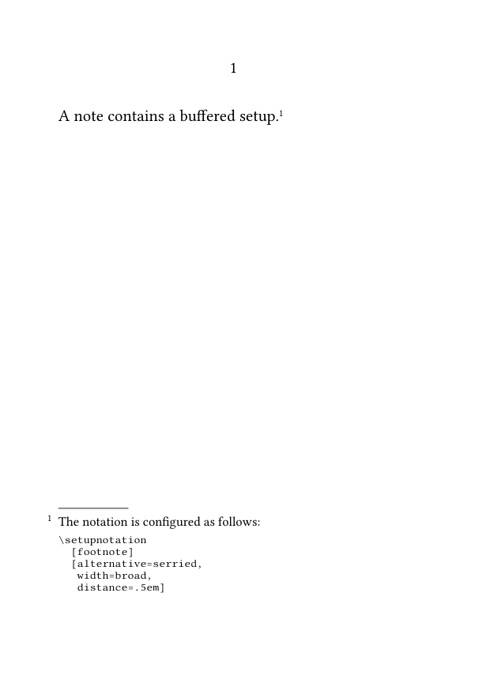
When preparing buffered code for a note:
- use short source lines;
- reduce the typing body font when necessary;
- avoid unnecessary indentation;
- inspect line breaks in the final note area;
- move the example into the main text if it remains too wide.
Verbatim does not reflow like ordinary prose
Reducing the type size cannot compensate indefinitely for long source lines.
7. Separate the mark from a complex note entry
When a note contains substantial technical material, separating its mark from its registered text may make the source easier to maintain.
7.1. MWE: separately registered note text with a buffer
-
\setuppapersize[A6] \setupbodyfont [libertinus,10pt] \startbuffer[manual-note-code] \setupnote [footnote] [location=text] \stopbuffer \starttext This passage has a separately registered note \note[foot:code]. \setnotetext [footnote] [foot:code] {The relevant setup is: \typebuffer[manual-note-code]} \stoptext
-
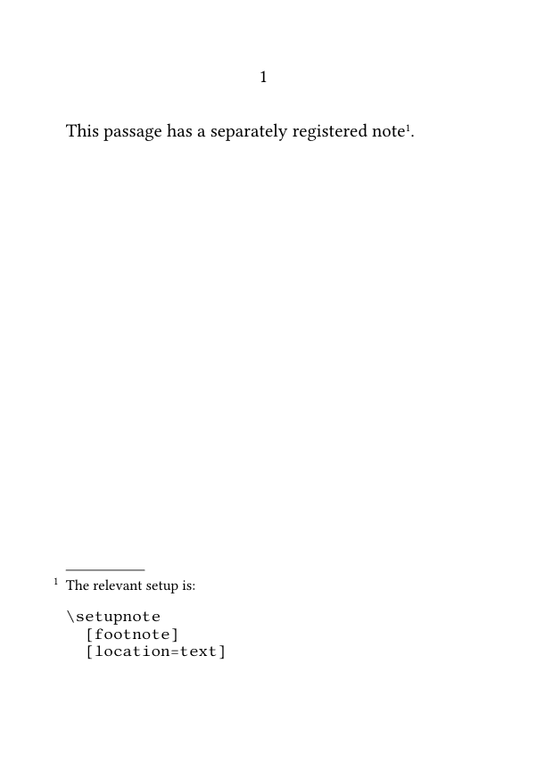
This separates:
- the place where the note mark occurs;
- the place where the note text is registered;
- the place where the code buffer is stored.
Separation improves structure, not parsing by itself
Separating mark and note text does not make raw code verbatim.
The buffer still prepares the code before the note text is parsed.
For the mark-and-text mechanism, see:
8. Use external files only when appropriate
Code may also be read from an external file:
\footnote
{See the following source:
\typefile{example.mkxl}}
This method depends on:
- the file being available to the compiler;
- the correct path or working directory;
- the current typing configuration;
- the width of the note area;
- the portability requirements of the project.
Wiki examples should remain self-contained
For ConTeXt Garden examples, prefer buffers unless the external file is deliberately included in the wiki compilation environment.
External files are more appropriate in a controlled multi-file project than in a small portable MWE.
9. Keep large examples in the main text
A footnote is not always the right place for a code block.
Keep the example in the main text when it:
- occupies many lines;
- requires detailed explanation;
- needs the full text width;
- would dominate the footnote area;
- is central to the argument rather than supplementary.
9.1. MWE: code block outside the footnote
-
\setuppapersize[A6] \setupbodyfont [libertinus,10pt] \starttext The complete configuration is shown below.\footnote {The example remains in the main text because it is too wide for the footnote area.} \starttyping \setupnote [footnote] [bodyfont=small] \setupnotation [footnote] [alternative=serried] \stoptyping \stoptext
-
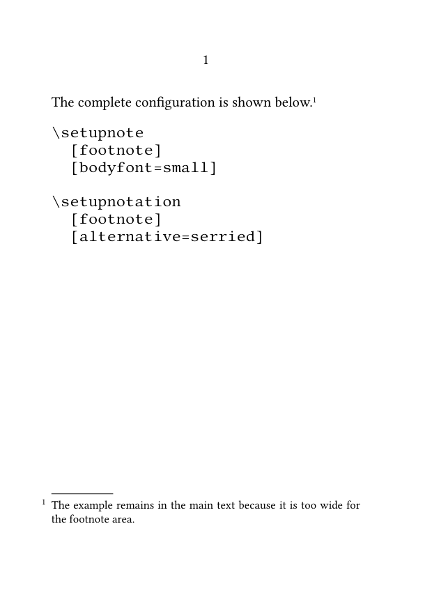
Editorial judgment matters
A technically possible footnote may still be typographically inappropriate.
10. Use a custom series for technical notes
Technical commentary may be structurally distinct from bibliographical or editorial notes.
Define a dedicated series when technical notes need their own command, counter, formatting, or placement.
10.1. MWE: a technical-note series
-
\setuppapersize[A6] \setupbodyfont [libertinus,10pt] \definenote [CodeNote] [footnote] \setupnotation [CodeNote] [numberconversion=characters] \starttext This command requires a technical explanation.\CodeNote {The command name is \type|\setupnotation|, and its first argument identifies the note series.} An ordinary footnote may still be used for bibliography.\footnote {Author, \emph{Title}, p. 42.} \stoptext
-
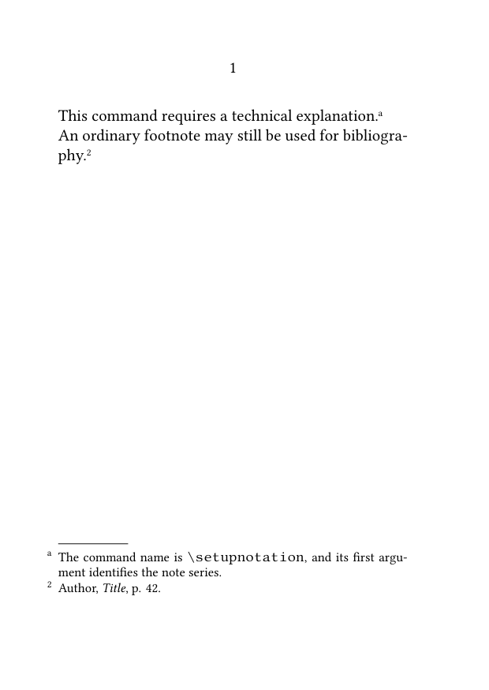
This keeps technical commentary structurally distinct from other notes.
For the definition and configuration of custom series, see:
11. Choose the appropriate method
| Requirement | Recommended method |
|---|---|
| A short file name or identifier | Use \type{...}.
|
| A short command containing braces | ...|. |
| One isolated TeX character | Use a dedicated character command. |
| A multiline source fragment | Store it in a buffer and use \typebuffer.
|
| A complex note with a separately managed mark | Combine a buffer with \note and \setnotetext.
|
| A large example | Place it in the main text. |
| A distinct class of technical commentary | Define a custom note series. |
The simplest method that preserves the intended source form is usually the most robust.
12. Common mistakes
12.1. Putting
\starttyping
directly inside
\footnote{...}
Prepare multiline code in a buffer or move it outside the note.
12.2. Assuming that
\type
and
\starttyping
solve the same problem
Use \type for short inline material.
Use a prepared typing block or buffer for multiline verbatim material.
12.3. Using inline typing for a very long line
Long commands may overrun the note width or produce poor line breaks.
12.4. Choosing a delimiter that occurs in the typed material
Choose another delimiter for the delimited form of \type.
12.5. Using an external file that the compiler cannot access
Prefer self-contained buffers in portable examples.
12.6. Treating a code-heavy note as ordinary prose
Configure the typing size, line length, and surrounding spacing explicitly.
12.7. Using verbatim when only one special character is needed
Use commands such as \letterpercent or \letterunderscore.
12.8. Letting code dominate the footnote area
Move substantial or central examples into the main text.
Most frequent source error
True verbatim material is introduced only after TeX has begun reading a normal argument.
Prepare the material before the footnote is parsed.
13. Complete example
The following MWE combines:
- inline typed commands;
- isolated special characters;
- a buffered multiline setup;
- a custom technical-note series;
- a larger example kept in the main text.
13.1. MWE: choosing the appropriate code method
-
\setuppapersize[A6] \setupbodyfont [libertinus,10pt] \definenote [CodeNote] [footnote] \setupnote [footnote] [bodyfont=small] \setupnote [CodeNote] [bodyfont=small] \setupnotation [CodeNote] [numberconversion=characters] \setuptyping [buffer] [bodyfont=small, before={\blank[small]}, after={\blank[small]}] \startbuffer[code-note-example] \setupnote [footnote] [bodyfont=small] \setupnotation [footnote] [alternative=serried, width=broad] \stopbuffer \starttext A short command may appear inline.\footnote {Use \type|\setupnote[footnote][bodyfont=small]| to change the note body font.} A technical note may contain isolated special characters.\CodeNote {A TeX command begins with \letterbackslash, comments use \letterpercent, and identifiers may contain \letterunderscore.} A longer configuration is stored in a buffer.\CodeNote {The complete example is: \typebuffer[code-note-example]} A large example should remain in the main text.\footnote {The following block is intentionally not placed in the footnote area.} \starttyping \definenote [CodeNote] [footnote] \setupnotation [CodeNote] [numberconversion=characters] \stoptyping \stoptext
-
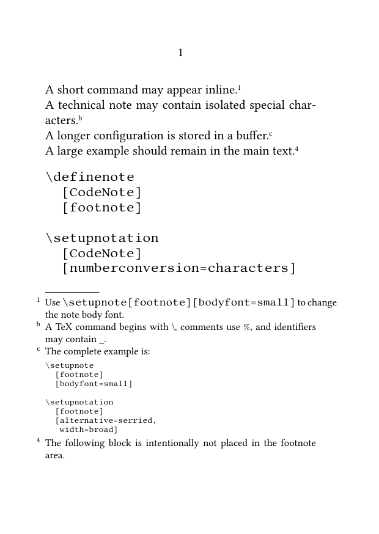
Compile the example and check that:
- inline commands appear in monospaced type;
- isolated special characters print correctly;
- the buffered setup preserves its source form;
- technical notes use a separate lettered series;
- the larger code block remains in the main text;
- no block typing environment begins directly inside a footnote argument.
14. What this guide has established
To include verbatim material in footnotes:
-
use
\typefor short inline material; - choose a delimiter that does not occur in the typed content;
- use character commands for isolated TeX special characters;
-
avoid block verbatim directly inside
\footnote{...}; - store multiline code in a buffer before creating the note;
- configure buffered material for the narrow note measure;
- separate mark and note text when complex technical notes are easier to maintain that way;
- use external files only in a controlled compilation environment;
- keep large examples in the main text;
- define a custom series when technical notes form a distinct editorial category.
The central principle is that verbatim material must be prepared before the ordinary footnote argument is parsed.
15. Next steps
15.1. Return to the guide overview
15.3. Consult the documentation
- Consult the footnote reference
- Understand the note mechanism
- Check the terminology used in the footnote documentation
Special content and advanced cases · Previous: Typesetting notes in bidirectional documents · How-to guides overview · Next: Footnote reference
Footnotes in ConTeXt · Overview · Tutorial · How-to guides · Including verbatim material in footnotes · Reference · Explanation · Glossary